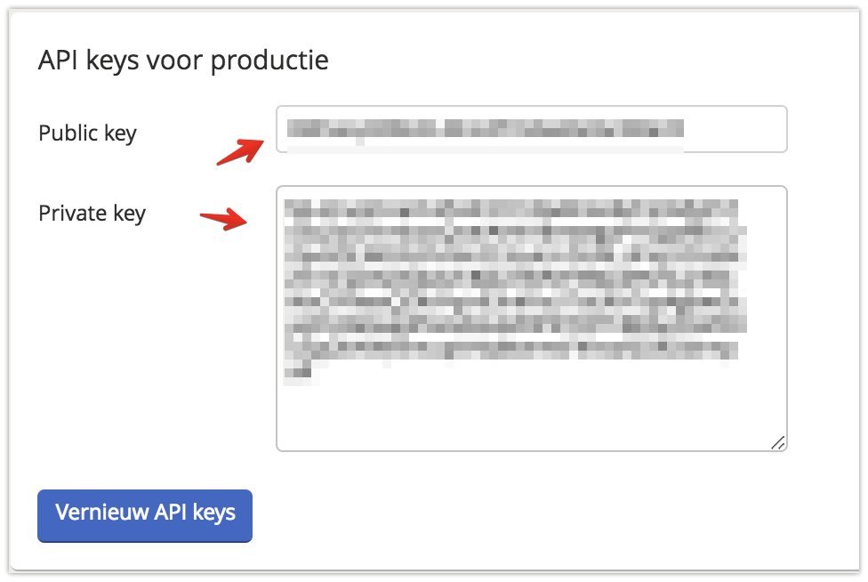
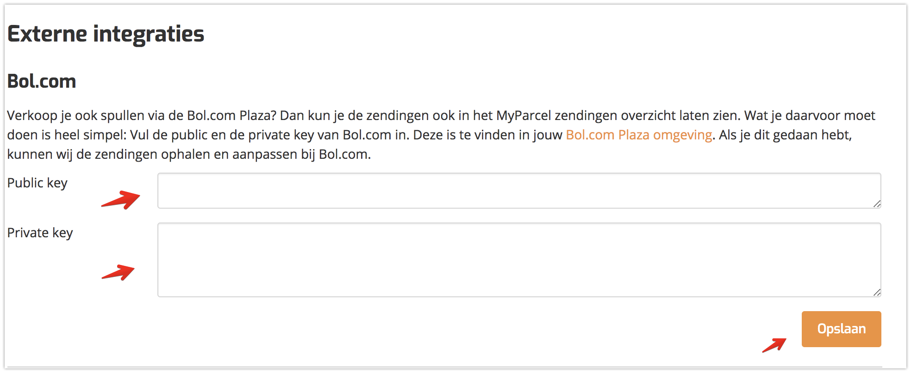
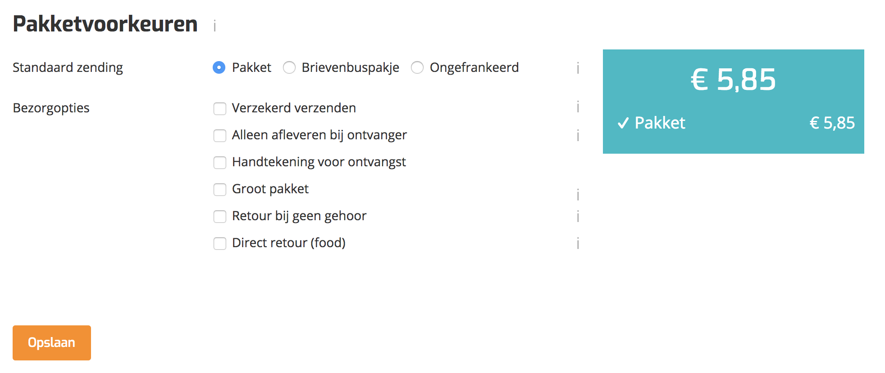
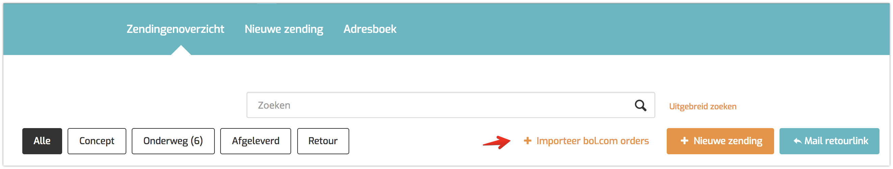
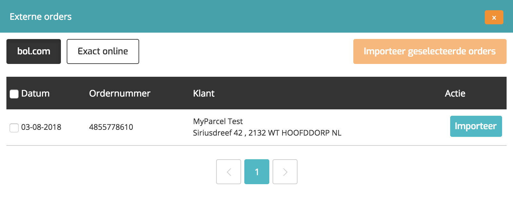

Instructie Bol.com plug-in
In deze handleiding wordt uitgelegd hoe je de Bol.com koppeling kunt installeren en hoe deze koppeling werkt.
We hebben speciaal voor Bol.com Plaza verkopers een koppeling ontwikkeld. Waar je voorheen handmatig adressen moest kopiëren en plakken, kun je nu met slecht één klik automatisch jouw Bol.com bestellingen importeren en een MyParcel verzending aanmaken.
Inhoud
1 Instellen van de koppeling
De koppeling instellen is erg eenvoudig, uiteraard heb je wel een MyParcel account nodig. Mocht je nog geen account hebben kun je deze via www.myparcel.nl aanmaken.
Als dit geregeld is, kan je in de instellingen van Bol.com de API gegevens vinden die je nodig hebt voor het instellen van je MyParcel account. Deze kan je vinden op de volgende pagina: https://login.bol.com . Vervolgens zal je onder Instellingen-> Diensten-> API Instellingen de API gegevens vinden.
Let op! Sinds Bol.com over is gegaan naar API 3.0 kan je de juiste keys vinden door onderaan de pagina Ik wil mijn oude API keys inzien
aan te vinken. Met de API keys voor productie kan je de koppeling werkend maken.

API keys
De Public en Private key die je hier ziet moet je invullen in jouw MyParcel account.
2 MyParcel instellen
2.1 API Integratie
In de backoffice van MyParcel moeten de Bol.com API keys ingevuld worden. Dit kun je doen via:MyParcel-> Integratie-> Externe integraties

2.2 Pakketvoorkeuren
In de backoffice van MyParcel heb jij de mogelijkheid om Pakketvoorkeuren in te stellen. De Bol.com koppeling hanteert deze standaard instellingen en zijn terug te vinden onder Instellingen-> Algemeen-> Pakketvoorkeuren.
3 Importeer Bol.com orders
In het zendingenoverzicht kun je nu je Bol.com orders importeren. Bovenaan het overzicht zie je nu een knop met "Importeer bol.com orders" of "Importeer externe orders" wanneer je ook de koppeling met Exact-online hebt gemaakt.

Wanneer je deze knop aanklikt zie jij een pop-up naar voren komen met de openstaande orders die nog verzonden moeten worden vanuit Bol.com. Deze orders kan jij allemaal tegelijk selecteren of per order. Om jouw orders te importeren dien jij op Importeer geselecteerde orders te klikken. Als je de orders hebt geïmporteerd zie je achter de order een groen vinkje, deze orders zijn goed geïmporteerd. Wanneer er een rode driehoek verschijnt is het waarschijnlijk een foutief adres.

Na het importeren van de orders is het nog mogelijk om deze eventueel aan te passen. Wanneer een barcode is gegenereerd zal deze dircet teruggestuurd worden naar Bol.com zodat er een verdere afhandeling plaats kan vinden.
4 Hulp nodig?
Indien je vragen hebt over de installatie of het gebruik van de plug-in, helpen wij je graag. Ook tips & suggesties voor verbetering van de (werking) van de plug-in, horen wij graag. Mail support@myparcel.nl of bel: 023 30 30 315.